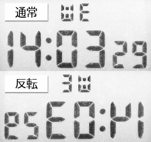
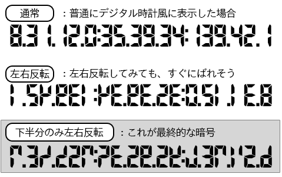
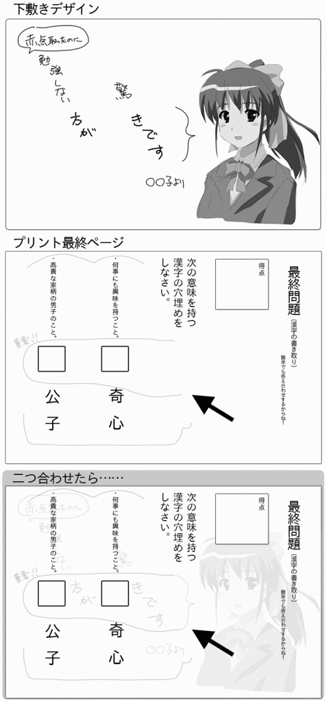
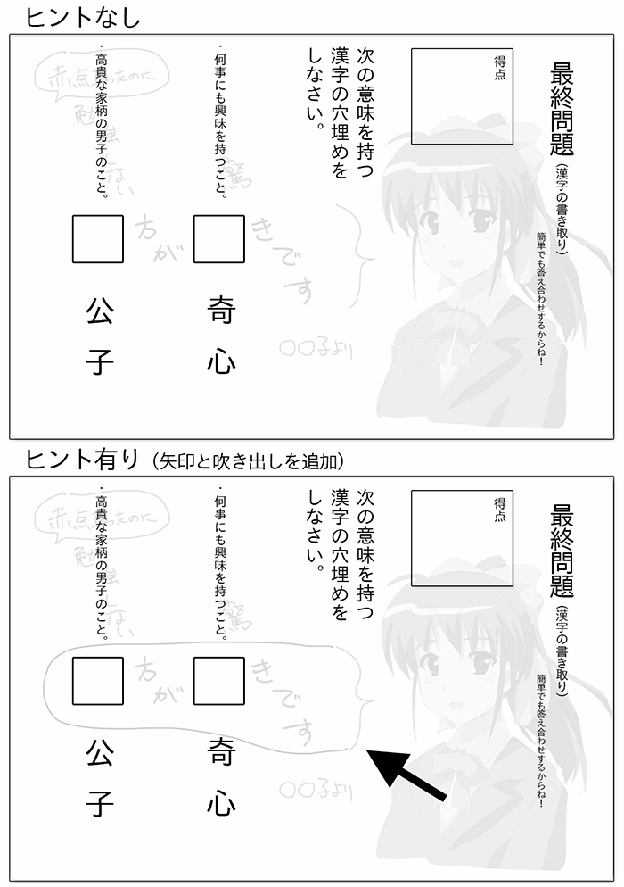
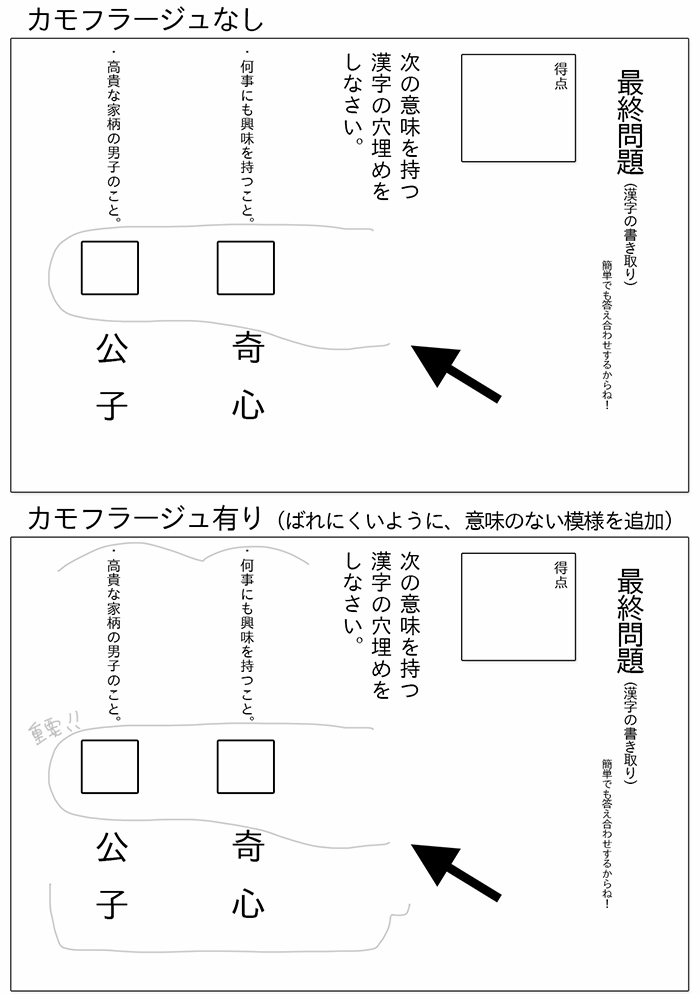

| ミステリー「暗号」の作り方 | |
| 中村あやえもん | |
| Ayaemo kenkyusyo (2014) | |
ミステリー「暗号」の作り方
中村あやえもん
Copyright © 2014 Ayaemo Research Institute. All rights reserved. Including the right to reproduce this book or portions thereof, in any form. No part of this text may be reproduced in any form without the express written permission of the author.
Version 2014.2.15
この本は、ミステリー作品や脱出ゲームを作りたい方向けに、「暗号の作り方」を説明した本です。
本書で書かれている方法を用いることで、世界観にマッチした「暗号」を短時間で作り出すことができるようになるでしょう。
ミステリー作品では、事件の「謎」が物語の面白さを決める大きな要素になるものです。
ですがミステリーで扱う「謎」を深めるのは、トリックだけではありません。
「暗号」も、トリックと同じように「謎」を作りだし、ミステリーには欠かせない要素になるものです。
物語中に難解な暗号があることで、トリックと同じように「謎」を作りだし、読み手に楽しんでもらうことができます。
「トリック」だけではなく「暗号」も効果的に組み込むことで、より完成度の高いミステリー作品ができるものです。
そこで本書では、「暗号」に焦点を当てて、その作り方を説明してゆきます。
実は暗号は、解読する側にとっては難しいものですが、作る側にとってはとても簡単です。
「暗号化のための法則」を作り、それに従って問題文を作ればよいだけですから。
例えば、「一文に含まれる漢字で、『口』のように囲まれた部分は何個あるか」という「暗号化の法則」を考えたとしましょう。その場合、「東京」は五、「京都」は三、「奈良」は二......という変換法則が作れます。
すると、次のような問題がすぐにできるものです。
・ 「東京-1=4」、「大阪-2=-1」、「京都-3=0」、「奈良-4=-2」、「滋賀-1=3」ならば、「北海道-3」はいくらになるか？（答：四）
問題を解く側になって、いきなりこの問題を出されても、なかなか答えは導き出せないものです。
しかし問題を作る側にとっては、すぐにできるものです。
ただしこのような作り方では大きな問題があります。
それは、「暗号を物語に即した形に仕上げるのが難しい」ということです。
実際に、上記のような「漢字で『口』のように囲まれた部分は何個あるか」という暗号を考えたとしても、連続殺人事件を起こしているような犯人や、今にも死につつある被害者が、そのような複雑で面倒くさい暗号を使うでしょうか。
被害者のダイイングメッセージなら、ダイイングメッセージとしてふさわしい暗号を考える必要があります。
そこで上記のような長ったらしい文章を書くぐらいなら、犯人の名前を書いた方が早いものです。
そのような状況では、短くても、犯人にばれないような、そんな自然な形で残す必要があるでしょう。
他にも、洋館のどこかに遺産を隠したのであれば、それにふさわしい暗号を考える必要があります。
警察にメールを傍受しても解読されないような暗号であれば、それにふさわしい暗号が必要です。
そのように、とってつけたような暗号ではなく、「状況に合わせた暗号」を作ることが、ミステリー作品では求められます。
そこで本書では、ただ単純に暗号の作り方を説明するだけではなく、物語の文脈にマッチする、そのような暗号の作成方法を提案しています。
この方法によって、より物語に自然になじんで、必要性のある暗号を作ることができるでしょう。
それにより、貴方のミステリー作品をより魅力的なものにして、「暗号を解読する」という面白さを追加することができるようになるでしょう。
また、本書の内容は、ミステリー作品だけでなく、謎解きゲームや脱出ゲーム、現実世界での脱出ゲームなどでも利用することができるでしょう。
本書を少しでもお役立てくださると幸いです。
二〇一四年二月六日 中村あやえもん
●はじめに
● 目次
● 第一章 「暗号」の種類
○ 「暗号」の概要と用語の定義
○ 暗号変換の法則
○ 暗号化の法則： 「計算」
○ 暗号化の法則： 「空間処理」
○ 暗号化の法則： 「分類（仲間はずれ）」
○ 暗号化の法則： 「置き換え」
○ 暗号化の法則： 「合い言葉」
○ 暗号化の法則： 「並べ替え」
○ 暗号化の法則： 「情報欠損」
○ 暗号化の法則： 「トリックを用いた暗号」
● 第二章 「暗号」を作る方法
○ 暗号を作る四つのステップ
○ ステップ一： 「平文」を作成する
○ ステップ二： 暗号化の法則である「鍵」を作成する
○ ステップ三： 解読のヒント（前振り・伏線）を作る
○ ステップ四： 鍵の隠蔽とカモフラージュを行う
○ 物語に暗号を配置する
● あとがき
● 付録：暗号化の法則一覧
● おくづけ
トリックと同じように、ミステリーで多く用いられるものとして「暗号」があります。
暗号とは、そのまま見たり読んだりしても意味が分からないように細工がしてあり、何か特殊な見方や読み方をすることで、真の意味を理解できる......というものです。
暗号も一種の「謎」と見ることができます。
そのため、ミステリー作品では、トリックと暗号を効果的に組み合わせることで、より魅力的な作品を作ることができるようになるでしょう。
暗号を取り扱う上で、最初に用語の定義をしておきましょう。
まず最初に、暗号化されたものを「暗号」、もしくは「暗号文」と呼ぶことにします。
暗号は、文字や文章に限らず、図形や絵、記号などで表現されることもあるでしょう。
一方で、暗号化されていない、元々の文章や意味のことを「平文」と呼びます。
これはすなわち、暗号解読をした「解読後の文章や意味」にも相当するものです。
また、暗号を施すことを「暗号化」と呼び、その逆の暗号を解読することを「復号化」もしくは「暗号解読」と呼びます。
最後に、暗号化や暗号解読をするためのアルゴリズムを「鍵」、もしくは「暗号化の法則」、「変換の法則」などと呼ぶことにしましょう。
暗号を作る流れは、次のようになります。
まずは本章では、実際にどのような暗号の種類があるのかを説明しましょう。
実際の暗号を作る手順については、次章で説明します。
暗号化するには、「鍵」、すなわち暗号化をするための「変換の法則」が必要です。
例えば、「五十音で一つずつずらす」という変換の法則であれば、「すきです」という平文は、「せくどせ」と暗号化できます。
「一文の頭文字のみを取得する」という変換の法則であれば、「好きです」という平文は、「好奇心が大切です。きぶんがよくなりますからね。でもやり過ぎは禁物。すこしぐらいがちょうどいい。」というように暗号化できるでしょう。
このように、規則に従った変換の法則で暗号化して、同じように規則に従った復号化をすることで、元に戻すことができるのです。
この規則が「鍵」になるわけですね。
暗号化の法則には、代表的なものとして以下のものがあるでしょう。
数値を暗号化するのか、文字を暗号化するのか、長文を暗号化するのか、図や絵を暗号化するのかによって、それぞれ得意不得意があります。
例：「文字や漢字の画数」、「漢字に含まれる縦線の数」、「五十音を一つずつずらす」、「アルファベットを一つずつずらす」、「一文字飛ばしで読み進める」......など。比較的長めの文章か、もしくは数字や数値を暗号化するのに向いている。
例：「文章の縦読み」、「左右対称にした鏡文字」、「文章に三角形の枠を当てはめると、文字が読める」、「一定の距離ほど離れた窓から見ると、窓枠でフィルタリングされて文字が読める」、「パズルのようにページを組み合わせる」......など。図や絵を暗号化するのに向いている。
例：「野菜と果物で分類。『りんご』、『みかん』、『スイカ』、『梨』だと、スイカだけが『野菜』で仲間はずれ」、「都道府県名と県庁所在地の名前が同じかで分類。『大阪』、『京都』、『岡山』、『兵庫』であれば、兵庫だけが県庁所在地が県名と違い『神戸』で仲間はずれ」......など。大量にある図や絵、短い単語の中に答えを潜ませて暗号化するのに向いている。
例：「二組の数値を五十音表に当てはめることで、文字が割り当てられる」、「日本語キーボードのアルファベットとかな文字の対応」、「英語の韻を、日本語の単語を使って表現する」、「『サングラス』を『グラサン』と言う」......など。文章を、特に長文を暗号化するのに向いている。
例：「駅の掲示板で、文章の冒頭が『大切な人へ』の場合、その投稿が必要な情報である」、「一昨日、君と一緒に食べた料理のメインディッシュの頭文字が答え」など。短い単語を暗号化するのに向いている。
例：「『金髪』を『パツキン』と言う」、「『たなかいちろう』という人名を『いなかたちうろ』と並び替える」など。文字数が少ない文章を暗号化するのに用いる。
例：「読み違い」、「書き違い」、「書き写し違い」、「スペルミス」、「コンピュータの変換ミス」、「タイプミス」、「個性的な文字」......など。短い文章を暗号化する時に用いる。
例：「文字のあぶり出し」、「蛍光塗料で暗くした時のみ読める」など。短い文章を暗号化する時に用いる。
これらの変換の法則を、一つ、もしくは複数個組み合わせて用いることで、暗号化を行います。
以下では、それぞれの変換法則について、詳しく見て行きましょう。
暗号化の法則として、「計算」があります。
これは、何かしらの数を数えたり、ある規則によって計算をすることで暗号化・復号化を行うものです。
先の例に示したように、例えば「文字や漢字の画数」、「漢字に含まれる縦線の数」、「五十音を一つずつずらす」、「アルファベットを一つずつずらす」、「一文字飛ばしで読み進める」などの変換法則がこれに含まれます。
以下で、それぞれの場合にどのように変換法則を発想するのか、説明してみましょう。
ちなみにコンピュータの世界での「暗号」と言うと、この「計算」に当てはまります。
平文が数字や数値の場合、「計算」で暗号化するのはとても発想しやすいものになるでしょう。
例えば、適当な数値を暗号化したいとしましょう。
この場合、数えたり計算した結果がその数値になる、そのような法則を考えます。
例えば次のようなものが思い浮かぶでしょう。
何かしらの法則と、それに当てはまる数値を決めることで、簡単に法則を発想できるでしょう。
平文が文章の場合、その一文字一文字を何かしらの計算できる「数値」に置き換えます。
その上で、計算を当てはめて変換しましょう。
例えば、以下のような法則が思い浮かぶでしょう。
これは、一つ一つの文字が持つ「数値」に着目します。
「五十音」では、「あ」を一、「い」を二、「う」を三......というように数値化していると捉えられるでしょう。
「五十音の子音と母音の組」で表現すると、「あ」を一、「か」を一一、「さ」を二一、「た」を三一、「い」を二、「き」を一二、「し」を二二......などと数値化できるでしょう。
「アルファベット」ではＡが一、Ｂが二、Ｃが三......となるものです。
アルファベット（二十六文字）ではなく古典ラテン文字（二十三文字）だったり、五十音ではなく「いろは歌」で表現できるかもしれません。
他にも、様々な「文章の数値化」が可能でしょう。
「文字の数値化」ではなく、「文字位置の数値化」もあるでしょう。
「一文字目を一、二文字目を二......」と数値化することで、「一文字飛ばしで読んでいく」などのように計算式に当てはめることもできるでしょう。
「句読点の位置を基準として、二文字後の文字を読んでゆく」という計算式でもできるかもしれません。
さらには、「文の位置の数値化」などもできるかもしれません。
このように、文字を数値化することで、文章を「計算」で変換できるようになります。
平文が図や絵の場合、その図や絵を数値化できれば計算での変換が可能になります。
これはコンピュータの世界では暗号化としてよく用いられるでしょうが、ミステリー作品では計算が複雑になり、コンピュータの助けなしに行うのは現実的ではないことが多いものです。
そのため、図や絵を「計算」で暗号化することは、あまり使用することはないでしょう。
暗号化の法則としての「空間処理」は、空間的なフィルタリング処理を行うことで、暗号を解読できるようにすることです。
例えば「文章の縦読み」というのは、「行頭以外を隠す」という処理を行っていると言えます。
「鏡文字」は、「左右を空間的に反転させた」という処理を行っています。
そのほか、一部分を隠したり、一部分をずらしたり、反転や回転をさせることで暗号化する方法になります。
これは、宝の地図などで、図や絵などを暗号化する時に使われることが多いでしょう。
この暗号を使用する際の注意点としては、空間処理を行うには、文字そのものよりも、その「空間的配置」が重要になります。
そのため、空間的にずれないように読み手に提示することが重要です。
例えば「縦読み」という暗号を、テキスト形式の電子書籍で書いたとしても、読み手の端末によって一行の行数が変わってしまう場合があります。
すると、暗号そのものが破壊されてしまう可能性があります。
この場合は、読み手にはテキスト形式ではなく、必ず画像で示すなど、空間的な配置がずれないように読み手に見せるようにするとよいでしょう。
以下に、「空間処理」の代表例を示します。
一部分を隠すことで、必要な情報を表示させることができます。
例えば部屋の壁に文字が書かれていたとして、部屋の中から見ても意味が分からない場合があったとしましょう。
しかし、窓の外から、侵入者目線で窓枠を通して見ると、窓枠で不要なものがフィルタリングされて、意味が分かるようになるという方法があります。
他にも、紙に描かれた宝の地図があり、一部分を折り曲げることで、宝のありかである「×印」が見えるようになる......といった方法もあるでしょう。
三角形や星形にくりぬいた紙などを上に重ね合わせることで、必要な情報を得られる......ということもあるでしょう。
また、特定の形をした目隠しをしたり、目張りをするなどによって、フィルタリングを行うなども考えられます。
日本で伝統的に有名な暗号化として、「たぬき」があります。
これは、例えば「つたくたえのたうえ」という言葉があった場合、「た」の言葉を抜くと「つくえのうえ」となる暗号化ですね。
これも、「た」の部分のみ空間的にフィルタリングをするため、「空間処理」の一種と言えます。
このように、「部分的に隠す」ことで、必要な情報を得られるようにできます。
空間処理では、一つの特定の場所を示すのにも使えます。
このときに、「重ね合わせる」という手法が用いられます。
例えば指を指している石像が複数あったとして、その石像が指さしている交点を割り出すことで、宝のありかを示すこともできるでしょう。
もしくは、石像がいくつか並んでいて、そこから全て等距離にある一点が宝のありかだと示すこともできるでしょう。
他にも、宝のありかを知りたい場合、二つ似たような絵を用意して、一カ所だけ異なる点を用意したとします。
その点を、別の地図と重ね合わせることで、宝のありかが分かる......といったフィルタリング処理を行うこともできるでしょう。
このように、「重ね合わせ」を用いることで、特定の場所を示すのに使えます。
特定の場所だけをずらすことによって、正しい情報にアクセスできるようになる方法も考えられます。
たとえて言うならルービック・キューブのようなもので、何度かずらすことで、正確な情報を得ることができるわけです。
特定の行数をずらしたり、絵の一部分をずらすことで、本当の意味を得ることができる......そういったものになります。
左右反転させたり、回転させることで正しい情報を得るという方法もあります。
代表的なものに鏡文字があるでしょう。
これは特に、数字やアルファベット、記号など、シンプルな形状のものに適用しやすいものです。
例えばデジタル時計の文字を考えた場合、左右反転や回転させても、一見では違いは分かりにくいものです。
このように、シンプルな形状に変換して反転、もしくは回転して示すと、一見では分かりにくい暗号になります。
暗号化の法則としての「分類」は、いくつかの共通点を元に、暗号の要素を分類することによって、必要な情報を絞り込んでゆく方法になります。
この場合、暗号は多くの雑多な情報の中に紛れていることが多く、その中から必要な情報のみを取り出す......という流れになることがあります。
その代表例が、「仲間はずれ」という手法です。
これは、先に説明したように、雑多にある情報の中で、一つだけ違う要素が含まれている時、それが重要な要素になるというものです。
例えば、「りんご」、「みかん」、「スイカ」、「梨」、「オレンジ」、「サクランボ」だと、スイカだけが「野菜」で仲間はずれだと分かります。
そこで、「スイカ」が謎を解くキーワードにできるわけですね。
他の例で言うと、全て日本語で書かれているのに、一文だけ英語で書かれている内容がある場合、英語の文章が「仲間はずれ」になります。
これは、「暗号の受け手は日本語が分からない」という状況を作ると、それが必要な情報だと瞬時に分かるものです。
他にも、バイキングやビュッフェで野菜を含まない料理を一品だけ用意すると、それが「仲間はずれ」となります。
もし伝えたい相手に「野菜が嫌い」という特徴を追加すれば、その人に伝えたい情報を渡すことができるでしょう。
この「分類（仲間はずれ）」は伝えたい相手の好みや属性によって分類しやすいため、雑多な情報の中から的確に一つの内容を伝えるのに使えるでしょう。
暗号化の法則での「置き換え」は、平文を別の概念体系に置き換えることで、暗号化する方法になります。
別の言語で表現したり、連想が必要であったり、文字の対応表を作ったり、隠語やダジャレもこれに含まれます。
そのため、この「置き換え」は多くのミステリー作品で用いられる柔軟性の高い手法になるでしょう。
例えば「二組の数値を五十音表に当てはめることで、文字が割り当てられる」、「日本語キーボードのアルファベットとかな文字の対応」、「英語の韻を、日本語の単語を使って表現する」といったものが「置き換え」に当てはまります。
置き換えには、代表的なものとして以下のものがあります。
そのため、主に文章を暗号化するのに向いています。
以下でそれぞれについて、詳しく見てゆきましょう。
「連想」とは、その平文を連想して別の言葉で表現することで、本来の意味を暗に伝える方法になります。
つまり、平文を別体系の言葉で表現するということですね。
例えば「正午」を連想して表現すると、「アナログ時計」という概念で表現すれば「針が一つになり、太陽を貫く時」とできるでしょう。
「午前零時」を「デジタル時計」という概念で表現すれば、「円が三つ並んだ時」と表現できるかもしれません。
「風呂場で待ち合わせる」という内容を「化学」という体系で連想して表現すると、「水蒸気で君が見えない」とできるかもしれません。
これは、伝えたい相手がよく風呂場で「水蒸気」と表現するような状況を設定すれば、伝えることができるものです。
同じように、「風呂場で待ち合わせる」という内容を「掃除をする人」という体系で連想すると、「水垢と共に」などと表現できるかもしれません。
これは、伝えたい相手が清掃をする人で、かつ「水垢」イコール「風呂場」と連想する状況を設定すれば、使えるようになります。
このように、別の概念体系で連想して言い換え、伝えることが「連想」になります。
これは伝えたい相手だけが持つ個性や特徴、知識や概念体系などを用いることで、必要な人にだけ伝えることができるものです。
伝えたい相手だけがアナログ時計を使っている場合、アナログ時計の体系で伝えることで、その人のみに伝えられます。
化学者なら化学的な言葉で、清掃員なら清掃の用語で変換すると、必然性のある、よい暗号ができるでしょう。
「対応表」とは、一つの絵や文字が、別の絵や文字と一対一で対応している暗号化手法になります。
代表的なのが、コンピュータで用いる日本語キーボードの、「アルファベット刻印」と「かな刻印」の対応でしょう。
被害者がコンピュータの前で殺された時、メールで他の人に「たなかいちろう」と送りたかった。しかし、入力が「かなモード」になっていたため「かちみちのちにかにすらな」と意味不明な文字を送った......というような内容が作れるかもしれません。
別の例では、チェス盤をその屋敷の見取り図として当てはめた場合、「チェス盤でキングがいる場所」が「家主がいる場所」と対応できるでしょう。
他にも、例えば村で、何かの星座と同じような家の配置があったとすれば、その星座の星の名前で、家の場所を呼ぶこともできるでしょう。
このように、何かしらの対応するものを用いることで、置き換えて表現することができます。
「隠語」とは、まさに何かのものや出来事を別の言葉で表現する、ローカルルールのようなものです。
専門用語だけでなく、方言やスラングなどもこれに含まれます。
例えば有名なところで、警察では暴力団のことを「マル暴」と表現したり、被害者のことを「マル被」と表現したりします。
お笑い芸人では、地方や田舎のことを「ドサ」と言ったり、彼女のことを「タレ」と表現したりします。
職業や業種によって、多くの隠語があり、それを使うことで同じ業種の仲間にだけ意味を伝えることができます。
「韻」とは、ダジャレのことですね。
ダジャレを用いることで、暗号化することになります。
「You know me?」を「湯飲み？」と表現したり、「I scream」を「アイスクリーム」と表現したり、「Alligator（アリゲーター：ワニ）」という文字表記を「ありがとー」と表現したりできるでしょう。
そのように、韻を取って別の言語で表現することが「韻（ダジャレ）」になります。
ウェブで「空耳」、「空耳英語」、「英語に聞こえる日本語」などのキーワードで検索すれば、いろいろと面白いものが出てくるので見てみるとよいでしょう。
もちろん日本語でも聞き間違えることはあるでしょうし、英語以外の言語で置き換える場合もあるでしょう。
これらのように置き換えて表現することで、暗号化することができます。
暗号化の法則として、「合い言葉」があります。
これは、前もって取り決めていたキーワードや出来事を用いることで、適切な相手に情報を伝える方法になります。
例えば、駅の待ち合わせ掲示板で「リーダーへ」という書き出しで始まる文章は、仲間への通信文である......などと決めておくことができるでしょう。
他にも、何かしらの記号や図、絵を添えておくことで、合い言葉だと示すこともあるでしょう。
また、互いだけが知っている情報を用いることも合い言葉に含まれます。
例えば「結婚十周年の時に食べたレストランで待ち合わせをしよう」、「君と一緒に一番最初に旅行した場所の名前が、答え」、「君の一番好きな番号が、答え」などのものですね。
これは暗号解読には、合い言葉や、過去の共通点そのものを事前に知っておく必要があります。
そのため、他の暗号化の法則とは違って「解読」という知的な作業は必要なく、事実を知ること、もしくは予想することが解読する作業に当てはまります。
暗号化の法則として、「並べ替え（アナグラム）」があります。
これは単純に、文字を並べ替えることで、別の意味を表す方法になります。
例えば、ある人の名前が「たじまじろう」であれば、その人の別名として「マジたじろう」というものにできるでしょう。
落ち合う場所が「京橋」であれば、「うしきょば」と表現できるかもしれません。
これは計算して答えを導き出すことができないため、短い単語のみに有効で、長い文章での暗号解読は実質不可能です。
また、場合によっては別の組み合わせで、想定外の単語ができてしまうというリスクもあります。
そのため、名前や地名などの短い単語で、さして重要ではない内容を暗号化する場合にのみ使うようにしましょう。
暗号化では、「情報欠損」という暗号化の法則もあります。
これは、「読み違い」や「書き違い」などによって、情報そのものにミスを含ませることで、すぐには読めないようにするものです。
代表的な例として、「読み違い」、「書き違い」、「書き写し違い」、「スペルミス」、「コンピュータの変換ミス」、「タイプミス」、「個性的な文字」などがあるでしょう。
例えば英語の「is」を、書き写す時に「ls」と間違ってしまった......などがあるでしょう。
他にも、「a」という文字を「d」に見えるような個性的な文字を使う人もいるかもしれません。
また、日本語に詳しくない人であれば、「ガソリン」の「ソ」、「リ」、「ン」の区別がつかずに、「ガリリリ」など言ってしまうこともあるかもしれません。
ひらがなでよく用いられそうな情報欠損としては、以下のようなものがあるでしょう。
状況としては、急いで誰かが書いた場合にこれを用いられるでしょう。
もし暗号化する人に急ぐ理由がない場合、別の「書き写す人」を作って、その人を急がせることで可能になります。
例えば警察官が「プリンターが故障した」とか「デジカメが壊れた」、「時間がなくて、走り書きしかできなかった」などという理由で、「情報そのもの」ではなく、メモ形式などの「書き写したもの」で手渡すことで情報欠損を作れるでしょう。
このように、何らかの情報を意図的に間違えることによって、暗号化することができます。
この場合、文章が長いものには使えないので、短い文章にのみ用いることになるでしょう。
暗号化の法則として、トリックを用いることがあります。
これは、何らかの原理や仕組みを利用して、相手に読めるようにする方法です。
代表的な例として、「文字のあぶり出し」や「蛍光塗料で書くことで、部屋を暗くした時のみ見ることができるようにする」、「木に蜂蜜を塗って、一晩してアリや昆虫がその塗った部分に寄ってくることで、文字が浮かび上がる」などがあるでしょう。
これらは、何らかのトリック、すなわち「原理」を必要とします。
「あぶり出し」であれば、「紙にレモン汁で文字を書いて、火に当てるとレモン汁で書いた部分のみが焦げて、文字が浮かび上がる」という原理があるものです。
「蛍光塗料」であれば、「部屋を暗くしたら、蛍光塗料で塗った部分のみが光る」という原理があります。
これらの原理を利用することで、必要な時と場所において、相手にメッセージを伝えることができるようになります。
そのため、別途トリックの元となる「原理」を探すか、考えつく必要があります。
代表的な原理としては、次の二種類があるでしょう。
以下で、それぞれについて説明しましょう。
一つ目の「視覚的変化を起こす原理」とは、その世界観において、視覚的変化を起こしうるものをトリックとして用いる方法です。
これは、「動くもの」もしくは「変化するもの」に着目するとよいでしょう。
例えば「水」は動くものなので、この水を用いてトリックの原理を考えることができます。
「床に水を流したら、わずかにへこんでいる部分があって、そこに水が集まって矢印が出てくる」とか、「水をはじく素材で文字を書いていて、水をかけたら文字が浮かび上がる」などのように、「水」に文字を書かせるわけですね。
同じように、動くものならいくらでも思いつくものでしょう。
「炎」も動きますし、「虫」ももちろん、場合によっては「人」も動きます。「光」も動きますし、「出窓のガラス」といったものも動くでしょう。
他にも、何らかの仕掛けを施すことで「風車の羽」や「時計の針」などもトリックとして用いることができるかもしれません。
このように、「動くもの」に着目して、原理を作り出す方法があります。
また、「変化するもの」に着目すると、「水」は「氷、水、水蒸気」のように変化しうるものです。
他にも「光」は色が変化したり、方向や角度が変化したりします。「鉛」は熱で溶ける変化も生まれるでしょうし、「風」や「雲」、「潮の満ち引き」なども変化しうるものでしょう。
そこから、例えば「正午にこの場所に立つと、太陽の光が窓ガラスに反射して、窓ガラスに仕組まれた文字が壁に浮かび上がる」などもできるでしょうし、「池の水がある一定量ほど乾いた時のみ、文字が浮かび上がる」などの原理が作れるかもしれません。
このように、「変化するもの」に着目して、原理を作り出すことも可能です。
もう一つの「聴覚的変化を起こす原理」とは、先に説明した視覚の「聞こえる版」と考えればよいでしょう。
この場合、「音の聞こえ方が変わるもの」に着目しましょう。
例えば「笛」は、音を変えることができたり、音が変わるものです。
そこで、笛の原理を部屋の構造に持ち込むことで、何らかの音を「違う音にする」ことができます。
そうすることで、他の人とは違った「音」を、必要な相手に伝えることができるわけですね。
笛の他にも、「窓の開き具合」や「窓の厚さ」、「スピーカーの種類」、「音楽用アンプ」など、様々な「音を変えるもの」があるでしょう。
この「音の聞こえ方が変わるもの」に着目することで、音を変化させる原理を導き出すことができるでしょう。
このように、何かしらの原理を用いて暗号化することも可能です。
前章では、暗号の種類を説明しました。
そこで本章では、実際に暗号を作る流れを説明してゆきます。
暗号を作る方法として、次のような四つのステップがあります。
それでは以下で、それぞれのステップについて詳しく見てゆきましょう。
まず最初に、何の文章や意味を暗号化するのか、その元となる文章を用意します。
当然といえば当然で、これがなければ暗号化も何もありませんからね。
まずは、何を暗号化するのか、その元となる情報を作ります。
暗号化するからには、その情報は何らかの「暗号化する必要性」があることになります。
そのため、元となる情報については、次の二つの要素を満たす必要があるでしょう。
例えば、「宝の隠し場所」などは無関係な人に知られてはまずいでしょうし、相続したい身内だけに伝えたいことになるでしょう。
そして、「宝」という価値を持っていることになります。
他にも、「犯人を告発するためのダイイングメッセージ」なども、もし犯人がその情報を改変もしくは隠滅できるのであれば、犯人に知られてはまずいでしょうし、警察関係者にのみ伝えたい内容になるでしょう。
これは、「真犯人」という価値を持っています。
これらのどちらか一つでも欠けていれば、暗号化する必要性がなくなるので注意しましょう。
平文を作る際、次の四点を設定するとよいでしょう。
この四つについて、作りましょう。
例えば、「テロの計画」という情報について考えてみましょう。
このように考えられるでしょう。
他の例で言うと、例えば「恥ずかしがり屋の女の子から、とある男の子にあてた恋のメッセージ」という情報を考えてみます。
このようにすることで、平文に暗号化する必要ができて、そして価値も作ることができ、物語としても機能するようになります。
なお、平文は短い文章だけでなく、長文でも大丈夫ですし、図や絵などでも構いません。
例えば「宝の地図」のように、その図や絵が意味を持てば大丈夫です。
それではこのようなコラムの形として、実際に何か暗号を作成してみることにしましょう。
今回は、洋館のミステリー作品で用いることを想定して、次のような情報を暗号化してゆくことにします。
とてもシンプルですね。
連続殺人事件などと組み合わせることで、より暗号の雰囲気が出せるかもしれません。
これは余談ですが、ここではオチの関係で、その遺産は当時は膨大な額のものだったが、現代では無価値になっているものとしましょう。
でなければ、暗号を解決する主人公が大金持ちになって物語が終わってしまうためですね。
例えば相当な年代物の、しかも質のよいワインを大量に残していたとして、でも保存状態が悪くてほぼ全滅だった......などとできるかもしれません。
全ての謎を解いた主人公が、知り合いの警部と共に、奇跡的に一本だけ残っていた超高価なワインを開けて楽しむ......という程度の報酬でいいでしょう。
それでは次のステップで、暗号化する方法を決めて行きましょう。
ステップ一で平文を作りました。
それでは次に、その平文を暗号化するためのアルゴリズム（鍵）を決めることにしましょう。
より自然な暗号化をさせたい場合、暗号化をする際に、「鍵」に意味を持たせるとよいでしょう。
例えば、「窓から入ってくる侵入者にだけ読めるメッセージ」や「この国で生まれた人にだけ読めるメッセージ」、「この家族に関わる人にだけ読めるメッセージ」、「この遺伝を持つ人にだけ読めるメッセージ」、「パソコンを操作中に殺された人だけが書けるダイイングメッセージ」など、その暗号を「読む側」もしくは「作る側」の特性に合った鍵を使うと、より自然な暗号にすることができます。
そこで、まずは解読させたい人の特性を決めて、その特性に合った暗号の「渡し方」を決めるとよいでしょう。
暗号は、その情報の渡し方によって変わるということですね。
テロ組織の例で言うと、テロの日時と場所の情報を、口頭で伝えるのか、電子メールで情報を送るのか、それとも駅の伝言板を用いるのか、新聞や雑誌の読者通信欄を用いるのかで、大きく変わるものです。
そのため、以下の内容を踏まえて暗号化するアルゴリズム（鍵）を決めるとよいでしょう。
もし口頭で伝える場合は「合い言葉」や「置き換え」が有効になるでしょう。
その場合は、どこかの指定場所で落ち合って、「君が『田中さん』ですか？」、「はい、貴方が『鈴木さん』ですね」などと、事前に打ち合わせた合い言葉を使うのが便利になるものです。
もしメールなどで送信する場合は、より柔軟にできるでしょうが、そこでも特性を暗号の鍵と関連づけるとよいでしょう。
例えばその実行メンバーが「元銀行員」であった場合、「在籍していた銀行の銀行コード」を「計算」の数値として使うことも考えられるでしょう。
実行組織の旗が十字であった場合、受信した意味のなさげな画像に、半透明にしたその旗を重ね合わせることで、必要な情報を取り出せるようにできるかもしれません。
暗号の渡し方が決まったら、実際にそれを踏まえて暗号を作ってゆきましょう。
暗号のアルゴリズムは複数を重複させて暗号化することも可能なので、いろいろと組み合わせて作ってみましょう。
暗号は、解読する側は大変ですが、暗号を作る側は作ろうと思えば簡単に、短時間で何種類も作れるものです。
何種類も作れる簡単さがあるため、高度な暗号にしたければ、より「物語中で自然な暗号」という物語との融合性を意識するとよいでしょう。
まずはテロリストの暗号として、以下のような受け渡し方法を想定したとしましょう。
実際の平文は、「八月三十一日正午、渋谷交差点」という時間と場所の情報を伝えることにしましょう。
メールで送信するので、複雑な処理をさせても大丈夫そうなので、いろいろと手を込ませてみましょう。
まずは、「置き換え」で、より記号風に見せるようにします。
「八月三十一日正午」を「8.31.12.0」という数値にできて、「渋谷交差点」も「北緯35°39'34"、東経139°42'1"」というように数値で表現できるものです。
そのため、これらを一緒にして「8.31.12.0:35.39.34:139.42.1」という数値に置き換えられます。
これでだいぶ、「サイバー犯罪を行う人」というイメージが出たかもしれません。
これだけでも十分に暗号として見えるでしょうが、もう一工夫してみましょう。
実行員はサイバー犯罪を行うような人なので、警察にメールを傍受されているかもしれませんし、コンピュータ解析で割り出されるかもしれません。
そこで、コンピュータでも分からないように、画像的に細工をしてみましょう。
ここでは「空間処理」を用いて暗号化するとしましょう。
図の一番上は、デジタル表示で普通に表示した場合になります。
これを左右反転してみると、図の真ん中のようになります。
ですがこれもすぐにばれそうなので、さらに一工夫して、「下半分のみ（中央の線を含む）を左右反転」させてみました。
すると、図の一番下のようになり、一見すると意味が分からなくなるものです。
それに、このような処理をすればコンピュータ解析もできないでしょうし、人間が紙にプリントアウトして切り貼りするという手作業が必要になるので、より解きにくくなったかと思います。
このようにシンプルながらも暗号化を複数組み合わせることで、読み手に簡単には予測できないミステリーの暗号になり、読み手がより楽しめるものになるでしょう。
もう一つ、暗号の作成例を作ってみましょう。
恥ずかしがり屋の女の子が、片思いの男の子にさりげなく「貴方が好きです」という内容を伝える、その暗号を考えてみましょう。
恥ずかしがり屋なので、「相手の男の子が自分のことを本当に大切に思っている場合のみ、『好き』という気持ちを伝える」......という、ちょっとした仕掛けを作ってみます。
そこで、以下のような受け渡し方法を想定します。
今回は、「空間処理」の鍵を用いて暗号化を行います。
タネとしては、女の子が、勉強嫌いで成績の悪い男の子のために、問題集のプリントを何枚か作って渡します。
同時に下敷きもプレゼントするのですが、その下敷きには絵で他愛のないメッセージを描いています。
プリントは少し薄い紙を使っていて、その下敷きを使うと、下敷きの絵も透けて見えてしまいます。
その男の子が、もし女の子のために嫌いな勉強を最後まで進めていけば、最後のプリントで、透けた下敷きの内容と合わさって「貴方が好きです」というメッセージを伝える......という仕掛けにしてみましょう。
プリントそのものは縦書きで、だけど男の子に送るメッセージは横書きで......という空間処理の構成にしましょう。
読みやすいように、イラストと吹き出しもつけておきましょう。
そして図を作ると、次のようにできるでしょう。

このように空間的に作ることで、暗号ができます。
「相手が女の子のために、女の子が用意した下敷きを使い、嫌いなものでも頑張って最後までやったら、メッセージを伝える」という状況で使えるので、適切な人に適切な状況で伝えられるわけですね。
もし逆に、相手の男の子が「勉強が好きで、頭がいい」という設定であれば、「計算」などの高度な暗号を投げかけることも考えられます。
そして男の子が女の子のために、汗水流して暗号を解いた時に「貴方が好きです」という内容を伝える......という風にもできるでしょう。
それでは実際に、「洋館の遺産のありかを示す暗号」について、「鍵」を作りましょう。
では、どのような受け渡し方をするのかを以下で考えます。
肖像画に描かれている人が、その「洋館の遺産」を残した人（館主）だということですね。
きっと、その館主の息子たちは、親をあまり尊敬せず、親の遺産にしか興味がなかったのかもしれません。
そこで、未来の心優しい子孫に遺産を残そうと、遺産を隠して暗号にした......というバックストーリーを考えられるでしょう。
物語では、いつの間にかその遺産の暗号が口づてに広まり、多くの遺産を狙う子孫や、主人公を呼び寄せたり、遺産を巡って連続殺人事件が起きたりする......という流れにもできるでしょう。
まずは暗号化の法則を選定する上で、「心優しい子孫のみに渡す」という点を考えて、優しさに関連する暗号化方法を考えてみましょう。
優しい人には暗号が解けて、不親切であったり奪うことを考えている人には暗号が解けない、そんな状況を設定します。
では、どのようにすれば、ふるいをかけられるのか。
例えば「困っている人にどうするか」という問いかけで、優しい人なら「手を差しのばす」、奪うことを考えている人なら「無視する」という答えがあるかもしれません。
他にも、「豊かな老人をどう扱うか」で、優しい人なら「親切に」、奪うことを考えている人なら「奪って蹴落とす」という答えがあるかもしれません。
ならば、屋敷内にいろんなシチュエーションを彫った石像をいくつも用意して、「その石像と石像を直線で結んだ、その交わる点にある石像の下に、隠し通路がある」というようにしましょう。
そして結びつける二つの鍵となる石像は、「困った老人の像」と「親切をする若者の像」という二つにします。
もちろん、他にも「蹴落とす人の像」とか、「だます人の像」、「奪う人の像」などの、様々な悪意に満ちた像があるとして、「困った老人の像」と「親切をする若者の像」のみ少しだけ特殊な「仲間はずれ」にするとします。
こうすることで、「多くの悪意のある人たちの中でも、親切な人にだけ渡す」というメッセージを込められるでしょう。
それだけだと肖像画の中に含める文章にならないので、その石像に導く文章を「置き換え」の連想を用いて作りましょう。
ここでは適当に、次のような雰囲気のある謎っぽい文章を考えました。
「この屋敷のどこかに、我が遺産へと導くヒントを残す。己の信念が交わる時、道は開けるであろう」
屋敷には「悪意に満ちた石像」が多くあるので、「石像と石像を組み合わせる」と発想できたとしても、その組み合わせは膨大にある......とできるでしょう。
でも、優しい人に限っては、「困った老人の像」と「親切をする若者の像」しか選択肢はない、という風にするわけですね。
このように考えることで、とてもシンプルで、物語のストーリーと密接に絡んだ暗号ができました。
暗号そのものを考えるのは簡単なので、物語とどれだけ密接に絡んだ「暗号方法の選定」ができるか、それがクオリティの高い暗号を作るためのポイントになるでしょう。
それでは次のステップで、解決へのヒントを作ってゆくことにしましょう。
ここまでのステップで、暗号そのものを作成できました。
それではこのステップでは、その暗号を解決に導くためのヒントを作ってゆくことにしましょう。
暗号を解読するために、ヒントを用意することがあります。
発想次第で誰にでも解けるような、簡単な暗号であればヒントは必要ないでしょうが、少し手の込んだ暗号の場合は、解読のヒントを用意する方がよいでしょう。
そのヒントとして、前振りと伏線の二種類があります。
「前振り」とは、その暗号を解読するのになくてはならないもので、物語として必要不可欠なものです。
一方で「伏線」とは、その暗号を解読するのに別になくてもよくて、物語としてもなくてもよいものです。
以下で、それぞれの内容について説明しましょう。
まず先に、前振りを作ります。
例えばテロ組織の暗号で、「八月三十一日正午、渋谷交差点でテロを行う」という暗号画像で考えてみましょう。
この場合、以下のような内容が前振りとして考えられます。
もしこれらの情報がなく、主人公の探偵が暗号を解読したとすれば、どうでしょう。
読み手にとっては「そんないきなり『これが場所と時間を指している』と解読できるなんて、不可能だろう」と不審に思い、物語として機能しなくなるものです。
このように、必要な情報を前もって説明しておく内容が「前振り」になります。
読み手にとって、主人公が暗号を解読したとしても「無理なく受け入れられる」情報をリストアップしておきましょう。
ただし、前振りがなくても機能することもあります。
例えば、男の子に「貴方が好きです」と告白する暗号のプリントと下敷きで考えてみましょう。
この場合、さして前振りを意識する必要はないと分かります。
というのも、事前情報がなくても物語は機能して、暗号そのものも簡単な仕組みだからですね。
「どのような前振りが必要か」を考えて、必要であれば、しっかりと説明するようにしましょう。
次に、伏線を作ります。
伏線は、読み手にさりげなく内容をほのめかすことによって、後で「あれはそういう意味だったのか！」と面白くさせるためのものです。
伏線があればあるほど読み手にとっては面白くなるものですが、伏線を入れすぎると、暗号解読の方法がばれてしまう危険もあります。
そのため、ばれない程度に配置するように、分量に注意しましょう。
テロ組織の暗号では、以下のような伏線が考えられるかもしれません。
プリントと下敷きで男の子に告白する場合、以下のような伏線が考えられるかもしれません。
他にも、何か「重ね合わせることで暗号を解読した」という出来事を入れてもよいかもしれません。
このように、ばれない程度にさりげなく配置しておく程度でよいでしょう。
読者に解読させたい場合、難易度が高すぎる場合は解読のためのヒントを用意しておくとよいでしょう。
例えばプリントと下敷きで男の子に告白する暗号を読者に解かせたい場合、次図のように画像中に目立たせるようにヒントを置くことができるでしょう。
この場合では、「透かして横に読む」ことが目立つように、吹き出しと、吹き出しを示す矢印を追加しています。

このようにしてヒントを与えることで、解きやすい難易度までかみ砕くとよいでしょう。
それでは、ここまで作ってきた「古い洋館の、遺産のありかを示す情報」の暗号について、解読のヒントを作ってゆきましょう。
屋敷の敷地内には悪意に満ちた多くの石像があり、その中に「困った老人の像」と「親切をする若者の像」があって、その二つを直線で結んだ上にある石像に、地下への通路がある......とします。
そして、肖像画には「この屋敷のどこかに、我が遺産へと導くヒントを残す。己の信念が交わる時、道は開けるであろう」と書かれているとします。
まずは前振りとして、以下のような情報が必要でしょう。
これぐらいの情報があれば、「心優しい子孫に遺産を渡す」という内容が、無理なく受け入れられるでしょう。
ではもう一つ、伏線を作ってみましょう。
この程度でしょうか。
このように解読のヒントを配置しておくことで、主人公が暗号解読をした時に、読み手が無理なく受け入れられる前準備ができるようになります。
このままではバレバレなので、次のステップで、これらのカモフラージュを行うことにしましょう。
ここまでのステップで、暗号と、その暗号を解決に導くためのヒントを作りました。
ですが、読み手にこれらの情報「だけ」を与えると、読み手がすぐに解読できてしまう場合もあります。
そのため、鍵やヒントの隠蔽と、カモフラージュを行うとよいでしょう。
では、どのように鍵の隠蔽とカモフラージュを行うのかというと、「別の鍵（暗号化の法則）に目を向けさせる」ことで可能になります。
この「読み手に誤った推測をさせる」ことを、「ミスリード」と呼びます。
これは具体例で見た方が分かりやすいでしょう。
例えばテロ組織の暗号で、「八月三十一日正午、渋谷交差点でテロを行う」という暗号画像で考えてみましょう。
この暗号を解読するには、まずは「空間」で下半分のみを反転させて、それを「置き換え」で「時間、緯度、経度に当てはめる」という二段階のステップで解読できる暗号です。
すると、以下のような全く別のヒントを与えることも考えられるでしょう。
例えば、以下のようなきっかけを作ることができるでしょう。
このようにして、鍵の隠蔽とカモフラージュを行うことができます。
「プリントと下敷きで男の子に告白する」という例でも見てみましょう。
「明らかに解読しやすい」と思ったら、次図のように「意味のない模様や線」といったカモフラージュを入れることで、難易度の調整ができるでしょう。

難易度を高くしたければ、カモフラージュを強めにするとよいでしょう。
難易度を低くしたければ、カモフラージュは弱めにするか、まるっきりなくしてもよいでしょう。
伏線とカモフラージュを効果的に組み込んで、状況に応じた難易度の暗号を作るようにしましょう。
それでは、「古い洋館の、遺産のありかを示す情報」の暗号について、鍵の隠蔽とカモフラージュを行ってみましょう。
今回の暗号は、「読み手に解かせる」よりかは、「読み手には解けなくて、主人公に解かせる」という方が、読み手にとっては面白く感じる内容です。
そのため、読み手にできるだけ予想できないように難易度を高める方がよいので、いろいろと難易度を高めるカモフラージュやミスリードを用意してみましょう。
この暗号は二段階で解決します。
一段階目は、「この屋敷のどこかに、我が遺産へと導くヒントを残す。己の信念が交わる時、道は開けるであろう」を「置き換え」で解読して、「石像と石像の交わる点に、ヒントがある」と分かります。
二段階目は、「困った老人の像」と「親切をする若者の像」を「分類」で解読して、該当する石像を特定します。
そのため、別の解読方法にミスリードさせるような情報を作ってみましょう。
これぐらいの内容を追加すれば、まず普通の読み手であれば、カモフラージュがありすぎて予測することはできなくなるものです。
このように鍵の隠蔽とカモフラージュを用意することで、先読みされずに、しかし確実に前振りや伏線を機能させる暗号を配置できるようになるのです。
以上のステップで、暗号作りは完了です。
ここまでの内容があれば、物語に組み込むことができるでしょう。
例えばテロ組織の暗号では、次のような物語にできるでしょう。
主人公の探偵は、何かしらの事件に巻き込まれて、警察と共に行動をすることになります。
そこでテロ組織の存在を知り、「特定日時にテロが行われる」という内容を警察から聞かされることになります。
警察はテロメンバーのメールを傍受して、そこから暗号らしき画像を取得しますが、警察にはその暗号が解けません。
主人公にその画像を渡しても、すぐには解けないでしょう。
しかし、事件が進むにつれて、警察から「そのメールは、日時と時刻、場所が含まれているようだ」という情報がもたらされます。
そして主人公が暗号を解読することによって、事件を解決する......という流れになるでしょう。
別途、他のトリックを用意した事件に暗号を組み込むことで、より魅力的な「謎」を作り出すことができるでしょう。
一方で、「プリントと下敷きで男の子に告白する」という暗号は、読み手に解かせる方が面白いかもしれません。
すると、女の子が男の子を好きだということ、そして告白したい......ということを強調して、物語を進める形がよいでしょう。
そして女の子が意を決して渡した......そんな状況でこの暗号を読み手に見せれば、「何らかの告白文が含まれている」と予想できます。
その上で、物語中でも、読み手に解答を出さないようにするとよいかもしれません。
男の子はその暗号の内容を理解したけれども、「あの暗号の内容が分かったよ」とだけ説明して、解答を伏せるわけですね。
すると、読み手もその暗号解読をしたくなるでしょうし、簡単な暗号なので、読み手も解決した時の面白さを味わえるでしょう。
暗号を使い、それを解読するのは、主人公だけではありません。
犯人が暗号をトリックとして用いることで、より幅広い暗号を使えるようになります。
例えば、犯人が「自分の両親を殺した、その殺害した奴を殺したい」という思いを持っていたとしましょう。
でも、犯人は誰が両親を殺したのか分からない。
そこで、両親を殺した現場にいた人にしか分からないような、そんな暗号を使ってメッセージを送るのです。
暗号で、「お前が誰々を殺した、その事実を私は知っているぞ。これから裁きが下されるであろう」といった内容で、脅しのメッセージを伝えると。
そうすると、それに気がついて恐れおののいた人が、犯人が殺すターゲットだと分かるわけですね。
これは、トリックで言うと「能力」を錯覚させる内容で、「犯人は殺したい相手を知り得なかった」という事実を錯覚させるトリックになります。
このように、犯人が暗号をトリックとして使うこともあるでしょう。
そしてこの場合、まずは主人公や犯人以外が暗号を解読することになります。
第三者がまずはその暗号を解読して行動をすることで、事件を進めるきっかけにもできます。
ここまでで暗号について説明してきましたが、「暗号」を物語に効果的に組み込むことで、より物語を魅力的に見せることができるようになります。
是非、よい暗号を作って、魅力的なミステリー作品を作ってくださればと思います。
おまけとして、「古い洋館の、遺産のありかを示す情報」の暗号を、実際に物語に組み込んだらどのような形になるのかを説明してみましょう。
内容としては、以下のような物語にできるでしょう。
主人公は探偵で、とある洋館に呼び出されます。
その洋館には、その洋館を建てた人の子孫が何人も集まっていて、なにやら険悪な雰囲気があります。
そこで主人公は、「洋館を建てた当主が膨大な遺産を残していたけれども、子どもたちには遺産を残さず、屋敷内に遺産を隠した。しかし今回、肖像画の中から遺産のありかを示す暗号が見つかって、金に群がって子孫たちがやってきた」という話を聞きます。
そして、何か他にトリックを用意して、殺人事件でも起こすとよいでしょう。
唯一の吊り橋が落とされて、クローズド・サークルになり、連続殺人事件にしても面白いかもしれません。
そんな中、主人公と警部は、屋敷内の至る所にある「悪意に満ちた石像」に着目して、これが暗号解読の鍵だと感じるでしょう。
物語が進むにつれて、洋館を建てた人の過去も明らかになるでしょう。
洋館の主は、子どもたちが争いを起こして孤独だったこと、ワイン好きだったということも明かされるでしょう。
そしてついに、主人公たちは「心優しい子孫に遺産を与えたかった」という内容を知ることになります。
主人公は、殺人事件を解決して、トリックを見破り、真犯人を逮捕します。
そして物語の最後に、「暗号も解けた」と言って、「困った老人の像」と「親切をする若者の像」の解読方法を明かします。
見つかった通路から地下室に行くと、地下室は崩れていて、もししっかりと保存されていれば膨大な額になったであろう大量のビンテージワインが、無残に残っていると知ります。
それによって子孫の人たちも「こんなもののために、いさかいを起こしていたのか」とがっかりして、争いをやめ、今まで奪うことしか考えていなかったことを反省するようになります。
しかし一本だけ、世界的にも他には存在しないほどのワインが奇跡的に一本だけ残っているのを、主人公か警部が見つけます。
警部が喜んだと思ったら、警部の部下か、もしくは適当な仲間が、知らずにそのワインを開けてしまいます。
最後に、「しょうがない」と開き直って、朝日が差す中、主人公は警部たちとワインを味わって、最高の報酬を得て、物語が無事に解決する......。
......このように、物語を作れるかもしれません。
暗号を作るだけでも、ある程度の設定を組み込むので、暗号から物語を作り出すこともできるでしょう。
暗号を上手く作って、より魅力的なミステリー作品に仕上げてくださればと思います。
さて、ここまでで暗号の作り方を説明してきましたが、いかがでしたでしょうか。
「暗号そのもの」は、第一章で説明した暗号の分類から適当に選んで作ればよいので、すぐにできるものです。
ですが、「物語の文脈に即した暗号」を作るとなると、それだけでは難しいものです。
そこで、第二章で紹介したような、物語を考慮した上での「暗号作り」の手順が効果的になるでしょう。
ミステリー作品では、トリックも大切ですが、暗号があると、より面白くなるものです。
この方法を使って魅力的な作品を作ってくだされば、これ以上嬉しいことはありません。
本書を少しでもお役立てくだされば、嬉しいです。
最後になりますが、本書ではチェックやら何やらで、戸田さん、榛原さん、息耐者カールさん、かるちさんにお世話になりました。この場を借りて、お礼とさせていただきます。
最後まで読んでくださって、ありがとうございました。
二〇一四年 二月六日 中村あやえもん
ミステリー「暗号」の作り方
二〇一四年二月一五日作成
著者 中村あやえもん
作成 あやえも研究所
〒740-0024 山口県岩国市旭町二丁目一二-四六-Ｄ号 中村方
ホームページ:http://ayaemo.skr.jp/
お問い合わせ:http://ayaemo.skr.jp/contact.html
（誤字脱字を発見した場合、右記連絡先までご連絡くださると嬉しいです）
Copyright © 2014 あやえも研究所. All rights reserved.